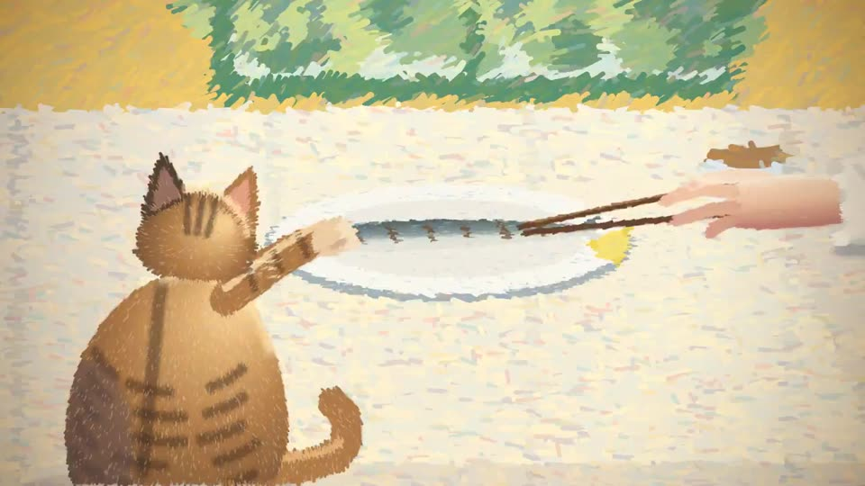
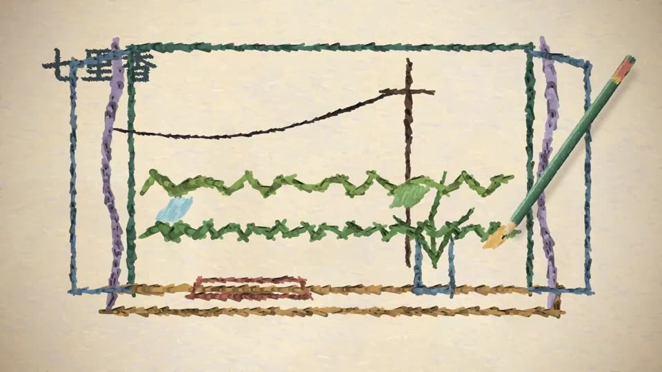
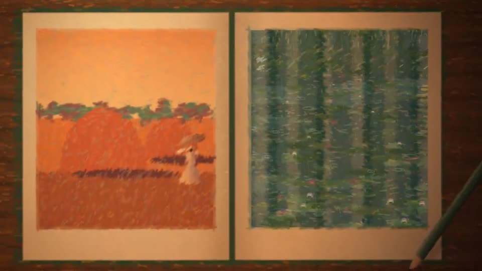
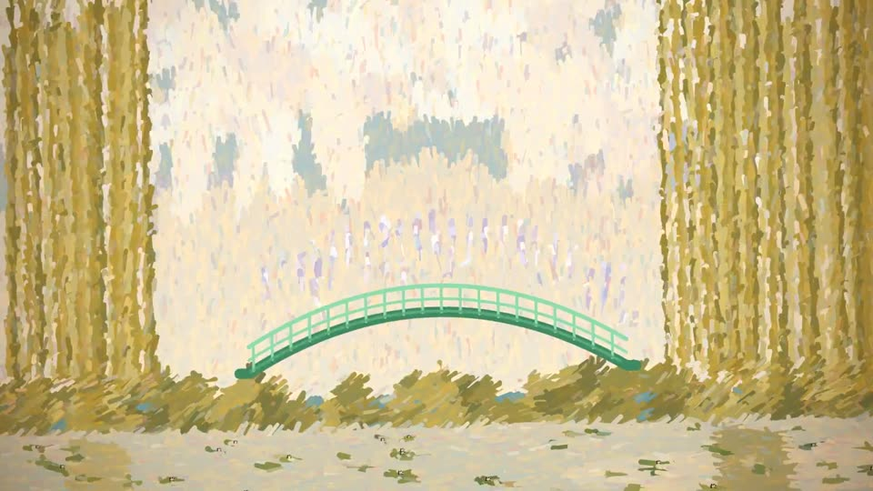
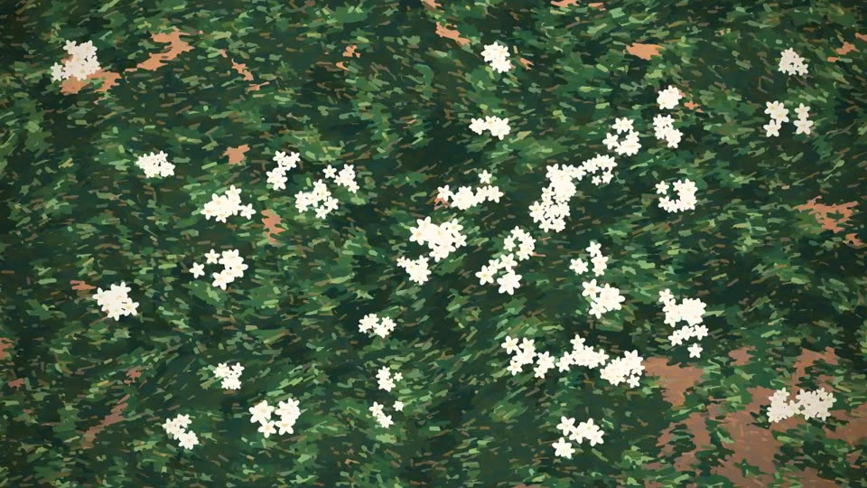
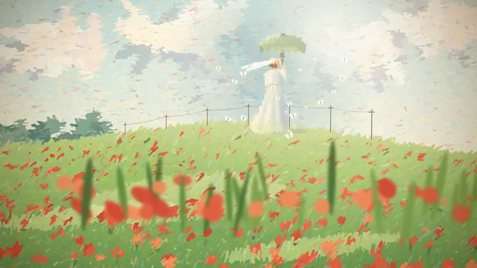

原帖正文
效果无敌了，用 Opus 5.5 给周董的《七里香》做了个 MV！
这次的提示词相当简单，就两句：
用莫奈的绘画风格，给周杰伦的七里香做一个MV /huashu-art-motion
仔细思考，按歌曲节奏做一个版本即可。做完后不需要审校和迭代。仔细斟酌每一个意向、画面、动效、运镜，我希望和这首歌的节点完美契合。然后，这首歌的音频资源甚至都是 Claude Code 找的……好像是从 YouTube 视频里扒拉下来的，所以还是个演唱会版本，额外给它增加了不少难度。但最终结果，自己看吧～
而且这次居然还挺省 token 的，迭代了两个版本，只花了不到 100 万的 token。
要点
- 模型 + 工具：Claude Opus 5.5（Claude Code）+ 作者开源的 skill
/huashu-art-motion。 - 提示词：只有两句——风格（莫奈）+ 对象（《七里香》MV），再要求按歌曲节奏、斟酌意象/画面/动效/运镜，且不做审校迭代。
- 素材：音频由 Claude Code 自行寻找，来自 YouTube 上的演唱会版本。
- 成本：两个版本、不到 100 万 token（作者自述）。
- 背景（引用帖）：huashu-art-motion 开源四天 3000+ stars；作者刚做了一轮大更新，目标是让 Codex 和国产开源模型也能做出类似效果，更新演示视频由 DeepSeek V4.1 flash 自主制作。
关键帧





画面包括手绘线稿开场、罂粟花田、睡莲池、日本桥、干草堆、雨中的小屋、写字的笔记本等莫奈式意象，全片约 5 分钟。